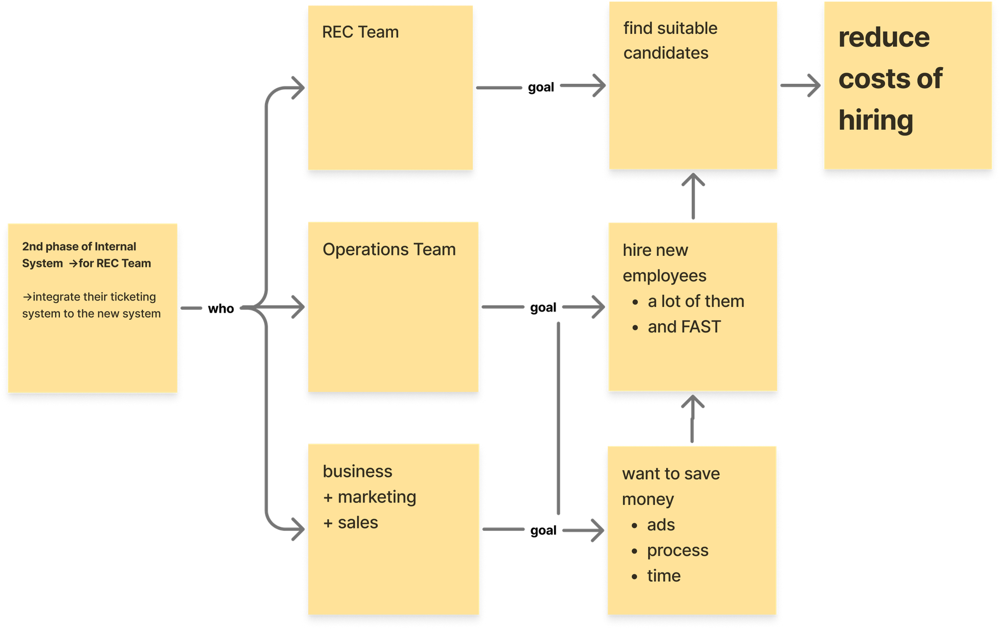
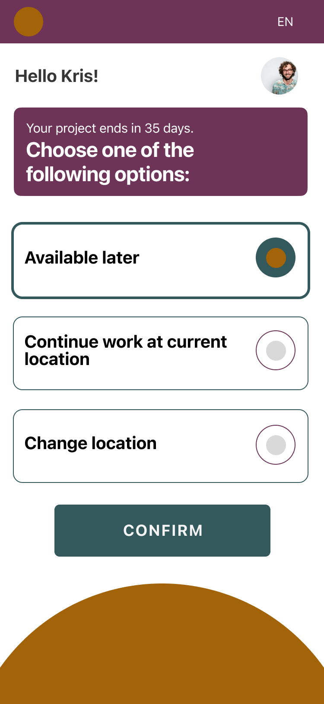
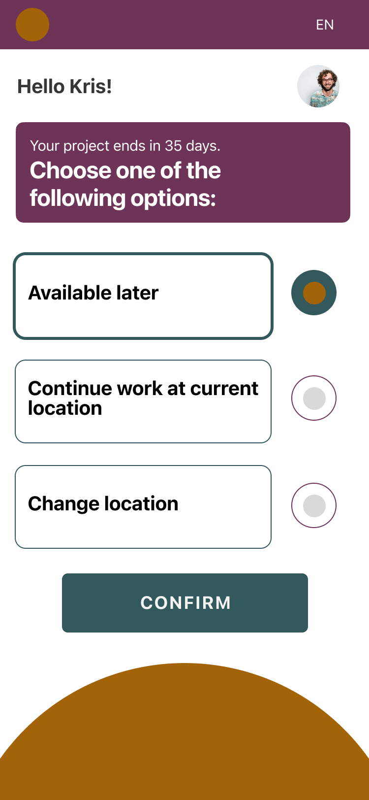
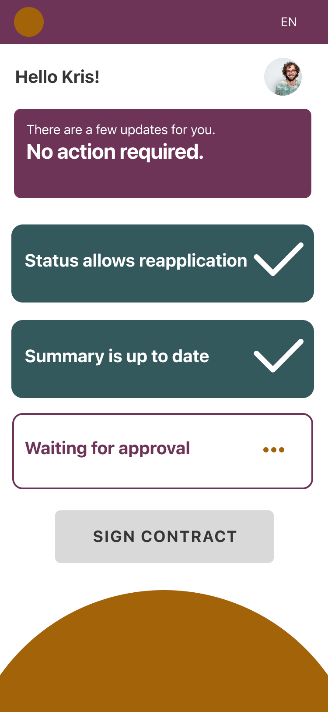
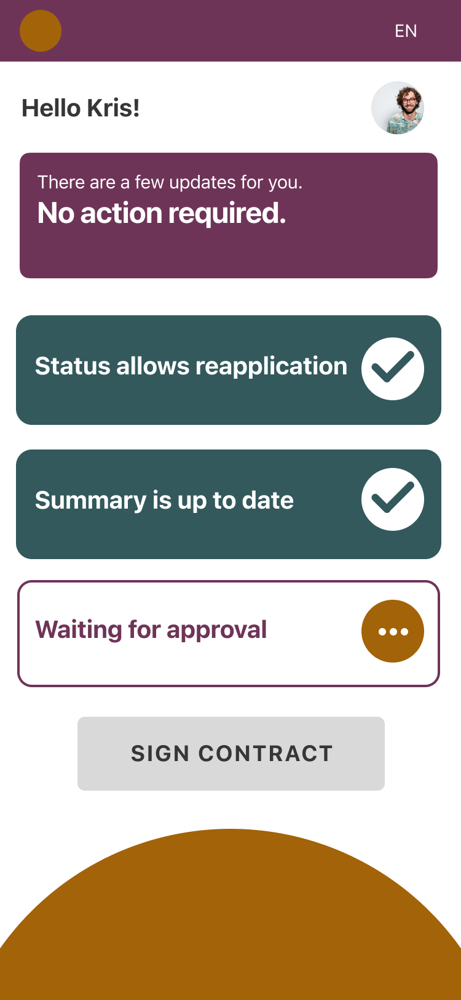

Ausgangslage
Die Agentur hatte ein neues internes System eingeführt, das die wichtigsten Abteilungen verbindet. Als Nächstes sollte das Recruiting-Team angebunden werden, mit seinem eigenen Ticketsystem.
Der Rahmen war eng:
Zeit
Stellen müssen oft innerhalb eines Tages besetzt werden.
Sensible Daten
Es geht um Personaldaten.
Feste Zyklen
Ein Einsatz dauert höchstens 9 Monate, danach folgen 3 Monate Pause, bevor jemand zurückkehren darf.

Bevor ich mit dem Design anfing, habe ich mir den Recruiting-Prozess genau angesehen. Jede Person durchlief denselben Weg: Anzeige, Website, Formular, kompletter Bewerbungsprozess. Auch Menschen, die schon für uns gearbeitet hatten.
Prozess-Grafik: Kandidat:innen sehen die Anzeige, gehen auf die Website, füllen das Formular aus und durchlaufen den normalen Recruiting-Prozess bis zum Ticket beim Recruiting-Team. Dann beginnt der Einsatz. Nach 9 Monaten gibt es drei Wege: Standort wechseln, Übernahme durch den Kunden oder nach Hause. Wer nach 3 Monaten Pause zurück will, bewirbt sich neu und fängt wieder bei der Website an. Handschriftliche Notiz daneben: why?
Insight
Das warf Fragen auf:
- Wie viele kommen nach der Pause zurück?
- Wie groß ist ihr Anteil?
- Und warum durchlaufen sie den gleichen Prozess wie neue Bewerber?
- 60 %kehren nach der Pause ins selbe Projekt zurück
- 5 %werden vom Kunden direkt übernommen
Was Rückkehrer wollen
Wir haben Mitarbeitende befragt, deren Einsatz bald endete.
würden eine App nutzen, um früher an neue Angebote zu kommen.
Umfrage: 47 von 50 Befragten
Ja, ich will als Erste:r von neuen Jobangeboten erfahren.
Außerdem zeigte die Befragung drei Wünsche:
Sich sicher fühlen
Einfach wieder einsteigen
Sich wertgeschätzt fühlen
Statt nur ein Ticketsystem anzubinden, lohnte es sich, sich auf die Rückkehrer zu konzentrieren.
Von der Frage zur Idee
In einem Design-Thinking-Workshop haben wir die Aufgabe als Frage formuliert und daraus die Idee entwickelt.
Wie können wir …?
Wie können wir dem Recruiting-Team helfen, Mitarbeitende, die nach der Pause weitermachen wollen, wieder einzusetzen, damit Stellen schneller und effizienter besetzt werden?
Die Idee
Eine App, die Mitarbeitende nach Projektende direkt mit neuen Angeboten verbindet. Ohne neue Bewerbung, ohne den Prozess von vorne.
User Flow
Der Weg für Rückkehrer ist kurz: anmelden, Status aktualisieren, Angebot bekommen, bestätigen. Das Herzstück ist der Status: Bereits geprüfte Mitarbeitende wählen mit einem Tipp, wie es für sie weitergeht. Die Daten gehen direkt ins interne System, das Recruiting-Team muss sie nicht neu erfassen.
- Anmelden
- Status aktualisieren
- Angebot bekommen
- Bestätigen
- Buchung landet im internen System
Das größte Risiko
Kurzfristige Absagen
Aus der Erfahrung vor der App wussten wir: Selbst wer gestern einen Vertrag unterschrieben hat, erscheint morgen nicht immer zur Arbeit. Bucht jemand einen Platz zum Beispiel zwei Wochen im Voraus, steigt dieses Risiko.
Lösung in der App
Deshalb bekommen Nutzer:innen kurz vor Projektstart eine Erinnerung. So sieht das Recruiting-Team früh, ob jemand es sich kurzfristig anders überlegt hat.
Vorteil: Vertrauen
Bei Rückkehrern ist das Risiko ohnehin geringer als bei neuen Bewerber:innen, denn sie kennen das Projekt und die Abläufe schon. Dass Stellen mit denselben Menschen besetzt werden, senkt es sogar zusätzlich.
Prototyp testen
Den Prototyp haben wir mit Mitarbeitenden getestet, deren Einsatz bald endete, also genau in dem Moment, in dem sie über den nächsten Schritt nachdenken. Sie sind die Screens auf dem eigenen Handy durchgegangen.
Uns interessierte:
- Ist jeder Schritt verständlich?
- Ist die App leicht genug, damit niemand aufgibt?
- Würden sie Benachrichtigungen erlauben?


Radio-Buttons: Wir haben Radio-Buttons gewählt, damit klar ist, dass nur eine Option möglich ist. Im Test war die Auswahl intuitiver, wenn der Button außerhalb der Fläche stand.


Bestätigungen: Im Test sollte die Bestätigung deutlicher sichtbar sein. Deshalb stehen die Häkchen und der Wartestatus jetzt in einem gefüllten Kreis.
Ergebnis
Mitarbeitende, die ein Projekt abgeschlossen haben, sehen neue Angebote früher und buchen ihren nächsten Einsatz direkt, ohne sich neu zu bewerben.
Weniger Recruiting-Aufwand
Das Recruiting-Team nutzt den vorhandenen Pool, statt für jede Stelle neu zu suchen.
Weniger Aufwand für Bewerber
Kein neues Formular, kein kompletter Bewerbungsprozess.
Stabilere Besetzung
Plätze gehen an Menschen, die das Projekt und die Abläufe schon kennen.
Was ich gelernt habe
Den Auftrag hinterfragen.
Die eigentliche Aufgabe war ein Ticketsystem. Erst der Blick auf den bestehenden Prozess hat gezeigt, wo der größere Hebel liegt.
Veränderung braucht Zeit.
Teams, die an feste Abläufe gewöhnt sind, wechseln nicht sofort. Neue Wege müssen begleitet werden.